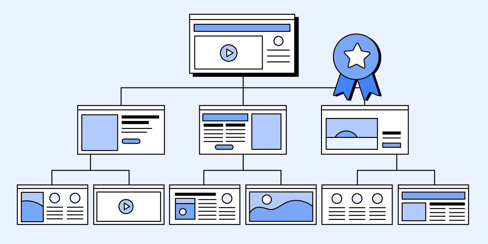
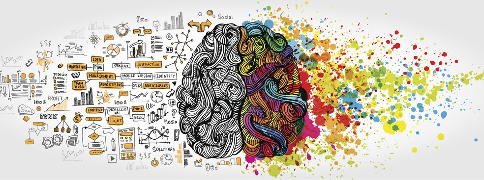

Développement du Site Web de Stage
Durant mon stage au cabinet orthodontique du Dr Olivier Quinty, j'ai conçu un site web dédié à la
présentation de mes expériences et projets réalisés. Ce site a été développé en utilisant HTML, CSS et
JavaScript, des outils fondamentaux qui m'ont permis de mettre en pratique les compétences acquises et
d'explorer de nouvelles techniques via des tutoriels sur YouTube.
Technologies et Applications
• HTML a servi à structurer le contenu de manière logique, facilitant l'accès et la compréhension des
informations par les visiteurs.
• CSS a été utilisé pour styliser le site, en harmonisant les couleurs avec celles du cabinet pour
maintenir
une cohérence visuelle. Les techniques de responsive design ont été appliquées pour garantir une bonne
visualisation sur divers appareils.
• JavaScript a introduit des éléments interactifs, comme des animations en scroll,
améliorant la fluidité et la fonctionnalité du site.
Avantages des Technologies Utilisées
• CSS offre une flexibilité dans la personnalisation du design, permettant des ajustements rapides et
efficaces, essentiels pour un rendu professionnel adapté aux standards actuels du web.
• JavaScript enrichit l'expérience utilisateur en ajoutant de l'interactivité en temps réel, ce qui est
crucial pour maintenir l'attention des visiteurs et encourager l'exploration du contenu.

Organisation structuré
En combinant ces technologies, le site web non seulement met en avant les compétences techniques que j'ai
développées, mais il sert aussi de vitrine interactive pour les réalisations de mon stage, reflétant mon
approche créative et ma capacité à intégrer des solutions technologiques dans un contexte professionnel.

Créativité
J'ai également exploité mes compétences de vidéaste YouTube pour créer une vidéo qui illustre
les journées types passés durant mon stage, donnant ainsi un aperçu concret de ce qu’il a été.